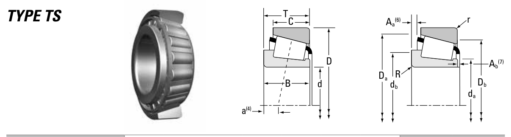

Original catalogue drawing - Timken TRB Catalog, page 90

Scanned from the manufacturer catalogue page listing this part number. All part numbers printed on that table share the same drawing.
Scale cross-section
Blue = inner / outer ring, yellow = rolling element. Drawn to scale from this part's own
dimensions for selection reference only - not a manufacturing or assembly drawing.
Dimension table (mm / inch)
Symbol
Dimension
mm
inch
d
Bore diameter
21.987
0.8656
D
Outside diameter
45.975
1.81
B
Inner-ring / bearing width
16.637
0.655
T
Overall assembly width
15.494
0.61
C
Cup / outer-ring width
12.065
0.475
r
Chamfer (min)
1.3
0.0512
Notes
Tapered roller bearings are cone / cup assemblies; cone and cup weights are listed separately and the total is their sum. Weights are given in kg. Load ratings are shown in both the original catalogue units and the converted value (1 N = 0.2248 lbf). Data is provided for selection reference only - confirm against the latest official catalogue before ordering.
Main dimensions
Bore d (mm)
21.987
Bore d (in)
0.8656
Outside dia. D (mm)
45.975
Outside dia. D (in)
1.8100
Width B (mm)
16.637
Overall width T (mm)
15.494
Overall width T (in)
0.6100
Cup width C (mm)
12.065
Load ratings & speeds
Basic dynamic load rating Cr (lbs)
8680
Basic static load rating Cor (lbs)
7930
Basic dynamic load rating Cr (N)
38600
Basic static load rating C0r (N)
35300
Dynamic rating C1 (N, ISO)
38600
Dynamic rating C1 (lbf, ISO)
8680
Radial rating C90 (N)
10000
Radial rating C90 (lbf)
2250
Thrust rating Ca90 (N)
5250
Thrust rating Ca90 (lbf)
1180
Static rating C0 (N)
35300
Static rating C0 (lbf)
7930
Factor e
0.31
Factor Y
1.96
Factor K
1.91
Geometry factor G1
8.2
Geometry factor G2
7.4
Geometry factor Cg
0.0480
Effective load centre a (mm)
-5.3
Weight
Weight (kg)
0.12
Mounting dimensions (fillets / shoulders)
Shaft fillet R max (mm)
1.3
Housing fillet r max (mm)
1.3
Shaft shoulder da (mm)
26.0
Shaft shoulder db (mm)
27.5
Housing shoulder Da (mm)
42.5
Housing shoulder Db (mm)
40.0
Cage projection Aa (mm)
0.5
Cage projection Ab (mm)
0.5
Bearing life (ISO 281 basic rating life)
C / P
Equivalent load P (N)
L10 (106 rev)
L10h at 500 rpm
4
9,650
102
3,386
6
6,433
392
13,083
8
4,825
1,024
34,133
10
3,860
2,154
71,814
15
2,573
8,323
277,449
Basic rating life per ISO 281: L10 = (C/P)10/3 with C = 38,600 N. Hours = L10 x 106 / (60n). Life-modification factors for lubrication, contamination and temperature (aISO) are not included.
Source & traceability
Brand
Timken
Source catalogue
Timken Tapered Roller Bearing Catalog (2016)
Catalogue page
p.90 (dimensions)
Series type
TS
ISO dynamic rating C1, Timken C90 / Ca90, static rating C0, geometry factors and assembly weight.
Send us the quantity you need and we will come back with price and
lead time, normally within 24 hours. Equivalent parts from other brands can be quoted at the same time.